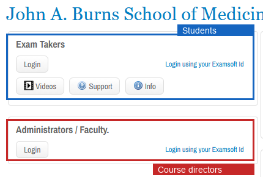
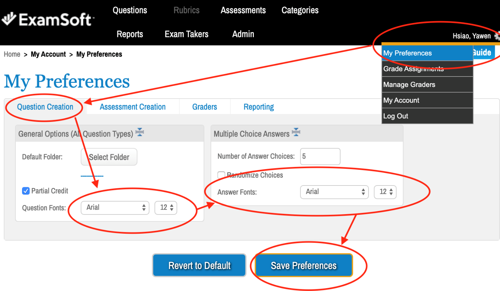

Your account
- Portal
- www.examsoft.com/hawaiimed
- Institution ID
hawaiimed- Sign-in
- UH single sign-on. No separate ExamSoft password.
Where to sign in
The login page has two sections. Course directors and faculty use the Administrators / Faculty section at the bottom. Students use the Exam Takers section at the top. Click the Login button in the Administrators / Faculty box.

If sign-in fails
The error is usually "No associated ExamSoft account found." The External ID on your account does not match what UH sends. Email Jesse Thompson at jessetho@hawaii.edu to get it fixed. An incognito window will not help.
Set your fonts

Permissions
OME sets your access when your account is created. If a portal area is missing, check the table below and email OME.
| Area | Setting | Why |
|---|---|---|
| Questions | Full or scoped to your folders | Write and edit items. |
| Assessments | Full or scoped to your folders | Build assessments. |
| Categories | Restricted | Shared tree across all historical data. Apply tags, do not restructure. |
| Reports | Granted | Item analysis and performance review. |
| Grading | Unchecked | See warning below. |
Vendor reference